표 갤러리는 한국을 대표하는 최고 작가들의 작품 전시 뿐만 아니라, 신진 작가 또한 발굴•양성하고 있으며 국내 및 해외의 다양한 아트 페어 출품작에 이르기까지 투자가치로서의 작품들을 감상, 투자할 수 있도록 전시를 기획하고 있습니다.
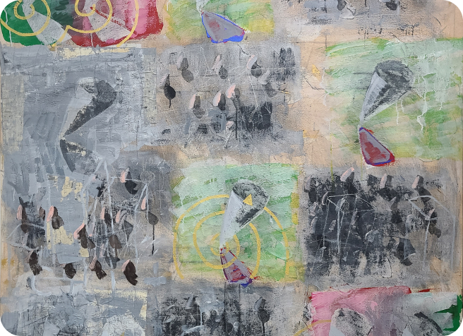
<기 KH003>, 곽훈, 1995
곽훈 KWAK Hoon
곽훈은 동양의 정신세계를 담아내는 작업을 통해 해외 미술계, 특히 미국에서도 인정받는 작가로서 물질주의적 주류에 대한 문화적 도전을 제시하고 가장 한국적인 미감을 선보인다.
4.19 혁명으로 한국에서 미술 공부를 이어가기 힘들어지자 미국으로 떠난 그는 한국에서 접하지 못한 재료를 혼자 사용하고 연구하며 자신만의 기법을 개발 및 독학, 전통적이지 않지만 독자적인 화풍을 획득했다.
초창기 작품은 선불교, 동양철학, 불교에 영향을 받아 동양적 사상을 표현했으며 그중 ‘기’, ‘다완’ 연작이 대표적이다.
기’는 씨앗이 터지는 과정에서 생기는 에너지의 흐름을 여러 가지 색과 질감으로 표현했으며 아크릴을 이용해 캔버스에 칠하고 긁어내는 과정을 반복, 독특한 질감이 드러난다. ‘다완’은 어릴 적부터 이어져온 우리나라 토기와 도자기에 대한 그의 관심을 반영한다.
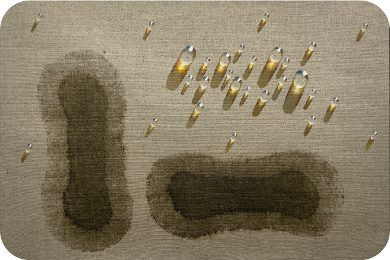
<SA0316-03>, 김창열, 2003
김창열 KIM Tschangyeul
김창열은 ‘물방울 화가’로 알려져 있다. 물방울 형태는 화가가 파리로 이주한 시기인 1970년에 창안되어, 그가 별세하기 전까지 김창열 작품에 주된 모티프가 되었다. 물방울 그림은 시기별로 다양한 구상으로 등장한다. 단순히 하나 혹은 다수의 물방울이 캔버스에서 나타나다가, 마대의 거친 표면 위에, 그리고 바탕에 천자문이 그려진 채로, 혹은 물방울이 일그러지고, 뭉개진 채로 다양한 형태 변화가 시도된다.
물방울을 그리게 된 것은 순전히 우연이었다. 파리 근교 빨레소(Palaiseau)라는 곳에서 마구간을 작업실로 사용하던 시절, 밤새 그린 유화가 마음에 들지 않아 캔버스 위에 물을 뿌렸다. 그 위로 아침 햇살이 비추었고 투명하게 맺힌 물방울이 빛을 머금은 모습에 매료되었다. 영롱하게 빛나는 김창열의 물방울은 일제강점기와 6.25를 겪으며 쌓인 상흔의 흔적을 정화하려는 시도로 해석되며, 배경의 천자문은 그의 조부에 대한 추억이자 미국과 프랑스에서 활동하면서도 간직했던 동양의 철학과 정신성에 대한 고집이다.
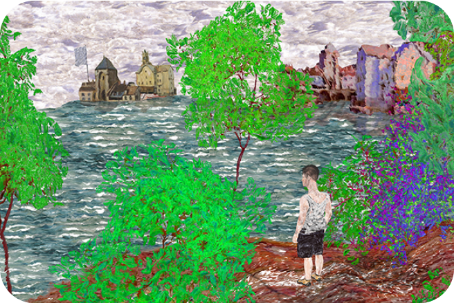
<예당호>, 김형수, 2023
김형수 KIM Hyeongsoo
김형수는 시간-회화라는 그만의 새로운 영역을 개척해 물감과 캔버스가 아닌 평면의 디지털 화면을 화폭으로 작업한다. 시간-회화란 시간의 부피를 운동, 속도, 리듬들로 채워나가며 회화적인 영역을 연구한다고 하여 붙인 이름이다. 그는 추상, 감정, 개념, 관념들로부터 출발하지 않고 모니터 속 컴포지션 위에 터치들을 반복하며 생성되는 차이, 변이, 움직임을 통해 감각 그 자체를 선보인다. 사물이나 현상을 통상적인 시각에서 벗어나 다르게 보여주기 위함이다.
화면 속에서 꿈틀거리는 형상들은 마치 어지럽게 놓인 물건들처럼 의도적이지 않지만 미묘한 관계망을 형성한다. 형상들이 맺는 관계, 움직임, 운동이 곧 시간이 되고 시간이 곧 운동이 된다. 전체적인 결정체의 정원과 같은 장소를 디지털 평면에 표현하고 그 안에 개별적 대상들이 운동하고 서로 이어지며 생성되는 다원성은 멋스러운 감각이 되어 관람객들이 각자의 의미를 느끼고 획득할 수 있게끔 유도한다.
<SA0316-03>, 김창열, 2003
백남준 PAIK Nam June
백남준은 비디오 아트의 창시자로, 1970, 80년대 대중문화의 상징인 브라운관 텔레비전을 통해 세계 곳곳의 관람객들과 소통하고 사회적 공감대를 형성하고자 했다. 예술과 과학 결합의 정수를 보여주는 그의 작품에서 텔레비전은 단순한 오락적 소모품이 아닌 자체로 독자적인 예술형식으로 사용되었다. 백남준의 첫 비디오 아트 작품인 는 실시간으로 촬영되어 화면에 비치는 부처상이 자신을 응시하는 작품으로 ‘자아성찰’의 의미를 지닌다. 그의 또 다른 대표작 중 하나인 <다다익선>은 1988년 서울 올림픽을 기념하기 위해 제작되어 화합의 기운과 세계인이 하나 되는 축제인 올림픽을 상징한다. 백남준은 텔레비전 외에도 무선 조종 로봇인 K-456를 만들어 다양한 퍼포먼스를 함께 진행하기도 하고 ‘비디오 신디사이저’라는 영상편집 기계를 만들기도 했다.
백남준은 비디오 아트의 개척자이기 이전에 행위 예술가였다. 그는 1956년 도쿄대학에서 미술사학 학사를 취득한 후 독일로 건너갔다. 독일 뮌헨 대학교, 프라이부르크 국립 음악 대학교에서 철학과 음악사를 공부하던 백남준은 현대 음악가 존 케이지와의 만남을 통해 행위 예술의 세계에 발을 들였다. 1959년 <존 케이지에게 보내는 경의>는 존 케이지를 통해 영감받은 음악에 대한 파괴적 접근과 자유정신을 표현하는 퍼포먼스로 존 케이지의 넥타이를 자르고 피아노를 부수는 행위를 통해 대중과 예술계에 큰 충격과 신선함을 선사했다. 이후 백남준은 요셉 보이스, 조지 마키우나스와 같은 예술가들과 함께 전위 예술 운동인 ‘플럭서스’ 활동을 시작했다. 그들은 플럭서스를 통해 삶과 예술 간의 경계를 허물고 당시 오브제 위주의 예술계에 반발하며 행위 예술과 전위음악에 몰두했다.
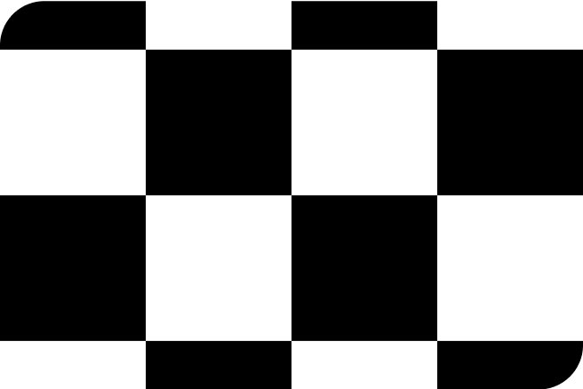
<SA0316-03>, 김창열, 2003
버튼 모리스 BURTON MORRIS
Internationally recognized Pop Artist, Burton Morris, is best known for his bold and graphic depictions of American icons. His subject matter includes objects that portray today’s popular culture. His distinctive style is characterized by radiant black outlines and vivid colors that emit energy in all of his artwork.
Morris's work often features recognizable images and logos from popular culture, including those from TV shows, movies, and consumer products. His artwork taps into the ongoing popularity of nostalgia and retro aesthetics.
In 1993, Absolut Vodka selected his artwork to represent Pennsylvania for its prestigious Absolut Statehood campaign. His artwork became part of the Absolut collection, and was showcased alongside fellow Pennsylvania natives Andy Warhol and Keith Haring.
In 1994 his paintings began to hang on the hit NBC television sitcom “Friends”, which continued to showcase his artwork for over ten seasons in the colorful Central Perk coffee shop. The success of the show becoming a global pop phenomenon, helped establish Burton’s style and artwork into todays pop culture.
Over the years, Burton has produced signature artworks for some of the biggest events in the world, such as the Summer Olympic Games, The 76th Annual Academy Awards, The MLB All-Star Game, The FIFA World Cup Soccer and the USGA U.S.Open.
Original artworks have been commissioned for corporations and institutions such as The United Nations, Coca Cola Corporation, Ford Motors, Sony, H.J. Heinz, Chanel Corporation, Rolex, The U.S. State Department, Samsung, Warner Brothers, Lincoln Center, AT&T and Microsoft.
Collectors of his work include notable icons Brad Pitt, Tommy Hilfiger, Oprah Winfrey, Stan Lee, Roy Disney, Ralph Lauren, John Travolta, Andre Agassi, Emeril Lagasse and President Barack Obama to name a few.
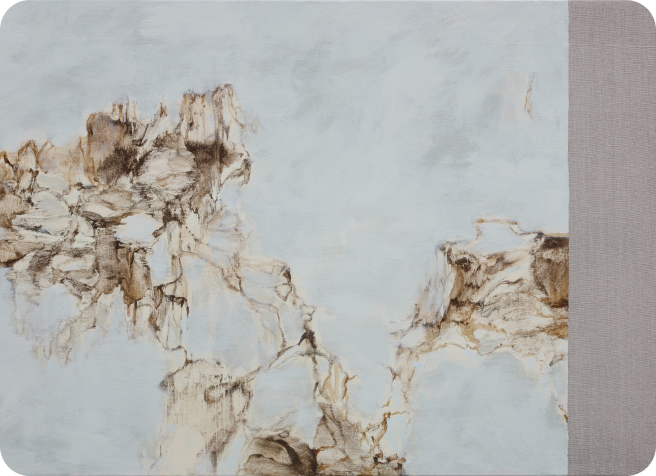
<Anima- Windy day MVII 211>, 윤명로, 2007
윤명로 YOUN Myeung-ro
윤명로는 한국 전후 추상미술의 핵심적 인물로 1960년대부터 서구 양식에 한국적 내용을 담는데 주력했다. 겸재의 수묵산수화가 추상회화를 만난다면 윤명로를 생각할 수 있지 않을까. 그의 그림은 순수 추상이면서도 한국의 산하를 조형적인 근거로 취하고 있다. 또한 서양화에서 흔히 쓰는 아크릴 물감의 비닐 같은 얄팍한 느낌이 싫었던 그는 조선의 철사 백자에 쓰였던 산화철을 작품의 주재료로 사용한다. 한 번의 붓질을 통해 드러나는 두께의 변화로 미세한 톤이 형성되는 특성을 살려 나이프와 헝겊으로 조절하면서 작품을 마무리하며 화면에 대한 사유와 호흡의 과정을 통해 자연의 기운과 숨결을 고스란히 담아내고 있다. 구체적 대상보다 자연에 내재하는 생명력이 살아 숨 쉬는 공간을 창출하는 작가는 동양적 사유의 결과를 현대적 미감으로 승화시켜 나가는 작가 고유의 독창적인 작품 세계를 선보인다. 흑갈색의 선이 가지 치듯 화면을 채우고, 수묵처럼 번져 뻗어나간 그의 그림은 흙과 산, 바위의 힘찬 기운을 담고 있다.
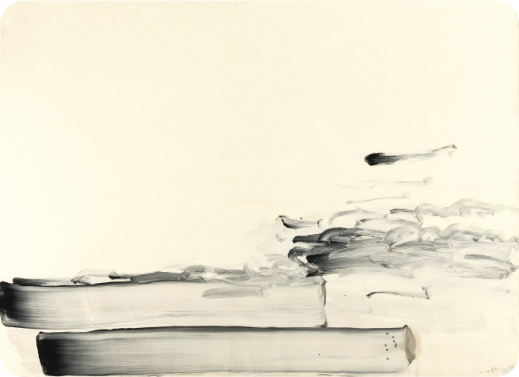
<바람과 함께 With Winds>, 이우환, 1990
이우환 LEE U-fan
이우환의 작업은 주로 관계에 대해 이야기한다. 철판과 돌을 활용한 조각 <관계항> 시리즈, 화폭에 여러 개의 점을 찍거나, 물감이 나오지 않을 때까지 선을 그은 <점으로부터>, <선으로부터> 시리즈, 그리고 큰 캔버스에 큰 붓으로 소수의 점을 찍은 <조응> 시리즈 작업들은 철판:돌, 물감:화폭의 대응관계에 대해 이야기한다. 사물과 사물들의 이러한 만남은 사물과 관찰자와의 만남으로 이어지며, 이는 물체 그 자체의 탐구를 통해 미학적 특성을 발견하려는 ‘모노파’의 시각적 실현으로 이야기된다. 존재와 사물, 공간의 ‘관계’를 철학적으로 표현하는 이 작품들은 그려진 것과 그려지지 않은 것 사이의 상호침투, 그리고 여백 현상을 통해 ‘생성과 소멸’, ‘존재와 부재’ 사이의 에너지의 반향을 느끼게 한다.
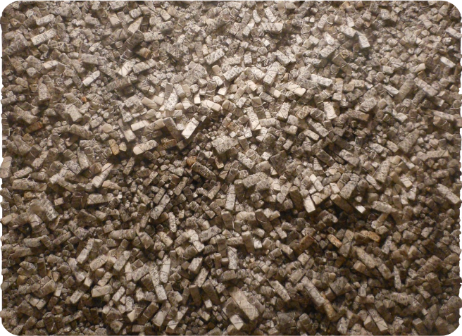
<Aggregation 001-SE080>, 전광영, 2001
전광영 CHUN Kwangyoung
전광영 작가의 대표작은 1995년부터 제작한 입체회화 <집합 Aggregation> 시리즈이다. 스티로폼을 대량의 삼각형 조각으로 자르고 한지로 이를 감싸, 같은 한지로 꼰 끈으로 묶는다. 이 조각들을 캔버스 위에 작가가 그린 드로잉에 따라 붙이면 거대한 집합적 구조물을 형성한다. 작가가 사용하는 한지는 고서이다. 적게는 50년, 많게는 100년 전 것으로, 옛 신문, 선비들이 공부했던 책, 이름 모를 가문의 족보, 상점의 장부 등이다. 전광영은 수십년 세월의 개개인의 삶의 경험과 흔적을 수집하여 포장하고, 많은 이들의 혼을 동시대 시공간에 공존하게끔 한다. 무채색 화면에 작은 면들이 긴밀하게 짜여 있는 그의 작품들은 기하학적인 미니멀 조각들의 집합이면서도, 외부 조명에 의한 그림자 효과, 채색에 의해 강한 입체감을 띤다. 작품 앞에서 관람객은 고요하면서도 힘찬 에너지를 느끼는 동시에 빛깔을 담은 고서에서 전해지는 과거의 무수한 이야기를 듣게 된다.
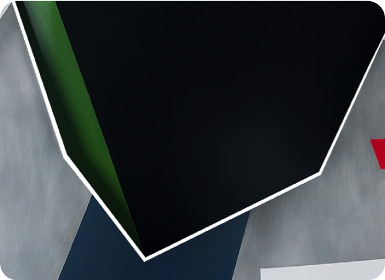
<무한 공간 19-7 Infinite Space 19->>, 정보원, 2019
정보원 CHUNG Bowon
정보원은 여의도 산업은행 조형물, LG 아트센터 조형물, 서울 파이낸스센터 조형물, 국회 개원 50주년 기념 조형물, 88 서울 올림픽 성화 도착 기념 조형물 등 건축적 규모의 공공 조형물을 제작했다. 우리에게 익숙한 도심 속 그의 조형물은 ‘건축적’, ‘구조적’, ‘남성적’, ‘웅장한’ 등의 수식어를 떠올리게 하며, 전통적인 조각 기법으로 빚어진 육중한 금속 덩어리와는 완전히 다르다.
정보원은 재료가 가진 볼륨과 무게감에서 벗어나기 위해 육면체와 수직의 선, 움직이는 곡선을 집합하며 다양한 조형적 실험을 반복했다. 정보원은 그의 공공 조형물을 통해 대중과 장소와의 유기적인 관계를 형성하면서 작품을 둘러싼 공간과의 조화를 이뤄냈다. “공공미술품은 건물과 길, 사람들을 배려하는 스페이스를 구성하는 것”이라는 작가의 작업 철학이 드러난다.
정보원은 공공 조형물뿐만 아니라 회화, 조각, 설치, 건축, 음악 등을 아우르는 종합예술가의 면모를 보이며 예술의 장르 뿐 아니라 인류의 모든 관계를 조형적 언어를 통해 전달한다. 특히 알루미늄판을 부분적으로 잘라 구부리고, 건축 구조를 연상시키는 기하학적 패턴을 아크릴로 덧칠한 그의 작품은 회화와 조각의 영역을 동시에 충족한다. 이처럼 정보원은 오랜 시간 작업해온 대형 조형물에 안주하지 않고 지속적으로 그의 작품 세계를 확장시키며 작가로서 무한한 시도를 이어오고 있다.
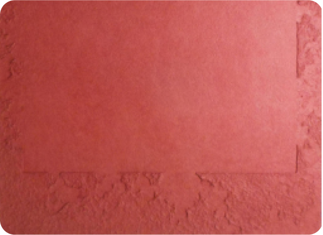
<Meditation No.23802>, 정창섭, 2003
정창섭 CHUNG Chang-Sup
정창섭은 한지에 대한 애정으로 ‘닥종이 화가’라고 불린다. 1970년대 중반부터 한지를 사용한 '귀'(歸, 1976-1980) 연작을 제작했다. 제목은 한지를 사용하여 전통으로 돌아가려는 화자의 의지를 드러낸다. 1980년대 초부터는 ‘닥(TAK, 1982-1990)’ 연작을 시작했다. 닥을 물에 담가 불린 뒤 면포나 캔버스 위에 올리고 손으로 두드리거나 문질러 미묘한 주름을 만들어냈다. 후에 같은 방식으로 제작하나 기하학적인 구조와 색이 더해진 ‘묵고'(默考, 1991-2010) 연작으로 발전했다. 작업하는 과정에서 종이에 생기는 자연스럽고 미묘한 주름까지 작품의 결과물이다. 닥종이는 깔끔하고 정갈하며 빛을 투과하지 않아 담백하고 부드러운 분위기를 낸다. 한국 현대미술에서 정창섭의 작품이 중요한 이유는 그 재료의 특성에서 한국인의 심성을 파고드는 무언가가 있기 때문이다. 정창섭은 특이하게 한지(韓紙)를 ‘한지(寒紙)’로 부른다. 한지야말로 추운 겨울에 만들어야 제격이라는 생각에서다. 한지에 대한 작가의 애정이 드러난다.
<기 KH003>, 곽훈, 1995
차종례 CHA Jongrye
차종례는 자신의 작품에 생명을 잉태하는 에너지를 담는다. 시간은 생명 에너지의 순환을 가능하게 하는 전제조건임을 알고 있는 작가는 매일 10cm 내외 깊이의 나무 조각을 다듬으며 시간의 흔적을 작품에 새긴다. 그는 초창기에 구상적인 부조 조각 시리즈를 탐구하다가 점차 기하학적이고 추상적인 작품으로 형태를 갖춰나갔다. 차종례의 추상 조각에는 재료 본연의 자연스러운 나무 무늬와 강가의 모래를 연상시키는 질감, 평면의 수동성과 원뿔의 공격성이 하나의 뿌리를 둔 것처럼 보이며 에너지의 팽창을 극대화 시킨다. 이러한 과정은 그의 작품에서 숭고 의식과 긴장감을 동시에 발생시키는 힘이다.
그는 나무라는 재료를 자신의 조형적 욕심을 드러내기 위한 “도구”로서 취하기보다 마음을 정화시키는 속 깊은 자기 성찰 “과정”으로 받아들인다. 깎아내고 쪼아낸 행위의 결과와 비슷비슷한 형태가 그 크기와 높낮이를 달리하며 작품 속 여기저기 출몰한다. 하나하나 깎아내었다기보다는 대지로부터 한꺼번에 크게 솟아난 듯한 모습을 볼 수 있다. 차종례가 제시하는 또 다른 소통 가능성과 순서가 확연하게 드러나거나 잡히지 않는, 결코 선후를 다투지 않는 아름다운 출몰이다. 그는 나무라는 재료가 지닌 물성에 대해 직접적으로 탐구하기보다는 그것이 지닌 결을 따라가며, 혹은 거스르며 의식의 흐름을 반영해 ‘드러내기와 드러나기’ 연작을 제작한다.
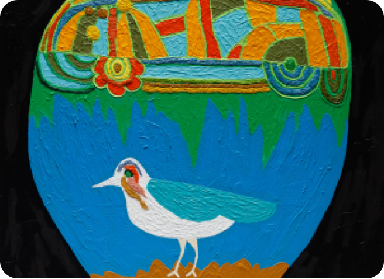
<Earth>, 하정우, 2022
하정우 HA Jungwoo
하정우는 일상 속 이미지와 형태의 조합을 통해 작품을 만드는 한국의 배우이자 작가이다. 어릴 적부터 아버지가 수집하시던 작품을 보며 자란 그는 자연스레 그림을 접했고 20대 젊음의 막연함을 해소하는 방법으로 그림을 선택했다. 하정우는 선명한 윤곽선과 다채로운 색감을 사용해서 그의 감정과 생각을 표현한다. 정신없는 그의 삶 속에서 그림을 그리는 것은 하정우에게 ‘쉬는’ 행위와 다름없다. 그는 “이젤 앞에 앉는 게 쉬는 것.”이며 “작품을 만들며 연기할 힘을 얻는다”라고 말해 작가로서의 창작 활동이 그의 삶에 얼마나 큰 원동력인지 보여준다.
팝아트와 표현주의를 섞은 듯한 하정우의 작품은 바스키아를 연상시킨다. 그는 독학으로 그림을 그린 바스키아를 통해 그림이 꼭 예술가만의 전유물이 아닌, 누구나 그릴 수 있는 것임을 깨달았다. 어디서도 그림을 배워본 적 없는 하정우는 과감하게 그림을 그려내기 시작했고 그것이 곧 그의 작품 스타일이 되었다.
2021년 열린 하정우의 개인전 은 일상 속에서 즐겨보고 경험했던 대중문화에서 소재를 찾았다. 쿠엔틴 타란티노 감독의 액션 누아르 ‘저수지의 개들(Reservoir Dogs, 1992)과 오스트리아 출신의 표현주의 화가 에곤 쉴레, 힙합 문화의 그래피티 등 그는 유연하게 다양한 소재들을 섞어 재밌는 작품을 탄생시켰다.
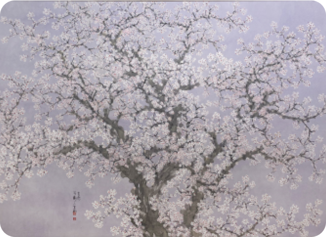
<Full Bloom Blossom>, 허달재, 2023
허달재 HUH Daljae
직헌 허달재는 한국 남종화의 거장인 의재 허백련(1891~1977)의 장손이자 제자로, 6살부터 할아버지에게 붓 잡는 법을 배웠다. 허달재의 초기작은 할아버지의 영향이 강하게 드러나지만, 1990년대 중반부터 자신만의 새로운 화풍을 찾기 위해 다양한 시도를 이어나갔다. 그는 조부의 맥을 잇는 문인화에 독창적인 현대 감각을 더해 '신남종화'를 개척했다. 추상적이지만 단아한 설채에 섬세한 붓질로 그려진 화조는 한국화의 장르 의식을 잃지 않으면서도 현대적인 해석을 더해 한국화의 새로운 시대를 열었다.
허달재의 대표작인 매화 시리즈를 비롯해 모란, 포도 등은 그의 작품에서 주요 소재로 찾아볼 수 있다. 특히 모란은 부귀를 상징하는 중국의 국화로, 조부가 키워 어릴 적 화단에서부터 봐왔던 꽃에 대한 작가의 오랜 관심과 어린 시절의 기억이 반영됐다. 또한 문자 추상 시리즈, 병풍, 설치 작업 등 다양한 형식의 작품을 제작해 캔버스에 국한되지 않는 풍부함을 보였다. 온고지신의 정신으로 문인화의 전통에 현대화를 가미한 허달재의 작품은 국내뿐만 아니라 중국, 뉴욕, 파리 등 해외 미술계에서도 큰 주목을 받아왔다.